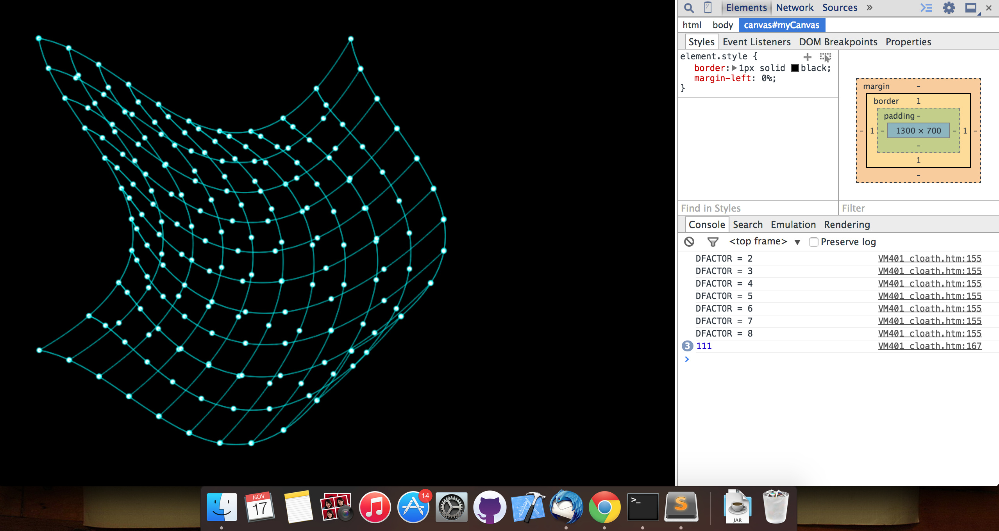

Drawing a 3d surface patch using Bezier equations
This post covers :
- What’s a bezier equation?
- Creating a 3d surface patch using Bezier curves
- Making it interactive

Screenshot of experiment
So what’s a Bezier curve:
Its a cubic parametric curve used to draw smooth curves, we can draw a bezier curve using two endpoints and two control points. It looks something like:

Bezier Curve - Wikipedia
So how to draw the surface using multiple bezier curves:
Well there are multiple ways, here’s what I did:
- Drew my first Bezier curve (The top one) and kept track of 10 equidistant points on that curve say HP.
- Drew first vertical Bezier curve (The left one) and kept track of 10 equidistant points on that curve say VP.
- Now for each point in HP draw a vertical bezier with same control points. Similarly for all points in VP draw horizontal Bezier curves with same control points.
- In the meanwhile you can draw points at equidistant points on each bezier curve.
- The code looks something like:
function plot() {
ctx.fillRect(0, 0, canvas.width, canvas.height);
// draw top line and find the points
set[0] = [];
set[1] = [];
ctx.beginPath();
ctx.moveTo(p1[0], p1[1]);
drawPoint(p1[0], p1[1]);
var c = 0;
for(var t = 0; t <= 1; t += .001) {
var x = Math.pow((1-t),3)*p1[0] + 3*t*(1-t)*(1-t)*p2[0] + 3*t*t*(1-t)*p3[0] + t*t*t*(p1[0] + width);
var y = Math.pow((1-t),3)*p1[1] + 3*t*(1-t)*(1-t)*(p1[1] + d1)
+ 3*t*t*(1-t)*(p1[1] +d2) + t*t*t*p1[1];
ctx.lineTo(x,y);
++c;
if (c % 100 == 0) {
set[0][set[0].length] = [x,y];
ctx.stroke();
drawPoint(x,y);
ctx.beginPath();
}
}
// draw first verticle line and collect the points
ctx.moveTo(p1[0], p1[1]);
var c = 0;
for(var t = 0; t <= 1; t += .001) {
var x = Math.pow((1-t),3)*p1[0] + 3*t*(1-t)*(1-t)*(p1[0] + d1)
+ 3*t*t*(1-t)*(p1[0] +d2) + t*t*t*p1[0];
var y = Math.pow((1-t),3)*p1[1] + 3*t*(1-t)*(1-t)*p5[1] + 3*t*t*(1-t)*p6[1] + t*t*t*(p1[1]+height);
ctx.lineTo(x,y);
++c;
if (c % 100 == 0) {
set[1][set[1].length] = [x,y];
ctx.stroke();
drawPoint(x,y);
ctx.beginPath();
}
}
// draw all vertical lines in a loop
// then draw horizontal lines in a loop
for(i = 0; i <= 9; i++) {
ctx.moveTo(set[0][i][0], set[0][i][1]);
var c = 0;
for(var t = 0; t <= 1; t += .001) {
var x = Math.pow((1-t),3)*set[0][i][0] + 3*t*(1-t)*(1-t)*(set[0][i][0] + d1)
+ 3*t*t*(1-t)*(set[0][i][0] + d2) + t*t*t*set[0][i][0];
var y = Math.pow((1-t),3)*set[0][i][1] + 3*t*(1-t)*(1-t)*(180)
+ 3*t*t*(1-t)*(300) + t*t*t*(set[0][i][1] + height);
ctx.lineTo(x,y);
++c;
if (c % 100 == 0) {
set[0][set[0].length] = [x,y];
ctx.stroke();
drawPoint(x,y);
ctx.beginPath();
}
}
}
for(i = 0; i <= 9; i++) {
ctx.moveTo(set[1][i][0], set[1][i][1]);
var c = 0;
for(var t = 0; t <= 1; t += .001) {
var y = Math.pow((1-t),3)*set[1][i][1] + 3*t*(1-t)*(1-t)*(set[1][i][1] + d1)
+ 3*t*t*(1-t)*(set[1][i][1] + d2) + t*t*t*set[1][i][1];
var x = Math.pow((1-t),3)*(set[1][i][0]) + 3*t*(1-t)*(1-t)*(180)
+ 3*t*t*(1-t)*(300) + t*t*t*(set[1][i][0] + width);
ctx.lineTo(x,y);
++c;
if (c % 100 == 0) {
set[0][set[0].length] = [x,y];
ctx.stroke();
drawPoint(x,y);
ctx.beginPath();
}
}
}
ctx.stroke();
}How to make it interactive: Simply change the control points according to input (mouse move, key press in my case)
Complete code available at my github repo: My-Playground/inside-the-mesh
How about we add a star to it?

Minhaz | Google | Singapore
I am working with Next Billion Users Org at Google. My team builds technologies for emerging markets.
I feel, the goal of delivering cutting edge technologies to resource constrained devices with seamless performance is hard, at times frustating but worthwhile.
Hoping for positive impact, good Karma and unbounded learning ;)
These days I am working on #Computational-Photography and try hard at #Photography as well.
I have good experience with #Distributed-Systems and #Applied-ML.